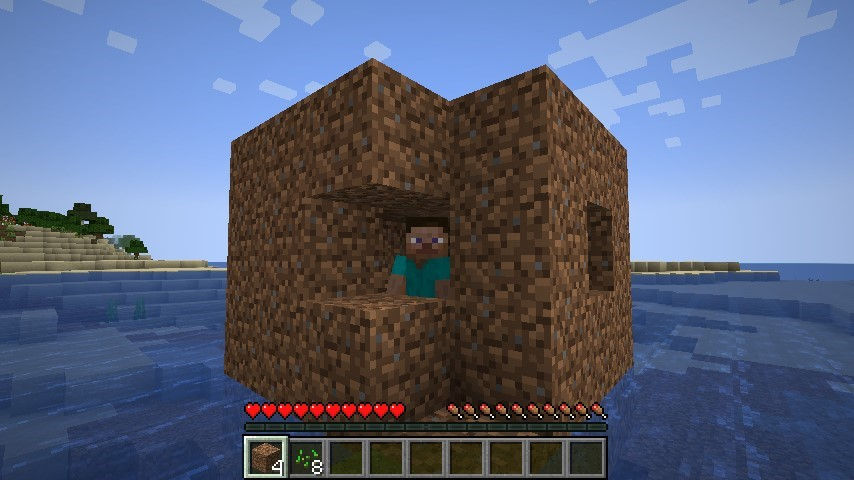

Meet our chef, Steve! Steve Mindkraft attended the University of Krafting with a degree in Cooking. He has been working at Bobert's Cat Cafe as the chef since the year 2001. Making art in your daily coffee and cooking bagels to perfection is his passion. There's nowhere he'd rather be than with his family at Bobert's Cat Cafe.
